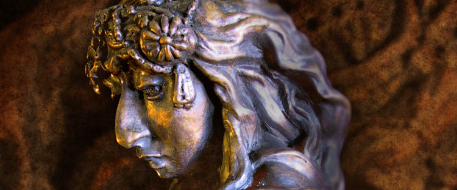

ПУРИМ | Эстер - образ Спасителя
Библия представляет нам героев веры, в которых можно видеть прообраз Мессии, Избавителя в т.ч., в лице еврейской женщины по имени Адаса (она же царица Эстер) Он являет Свое спасение еврейскому народу. Богу возможно всё.

скульптор Эфраим КалишЦарица Эстер | Тяжелый выбор
Образ Эстер, запечатленный в этой фигурке, дорог мне тем, что здесь она изображена в критический момент. Она достигла царского достоинства. А ее дядя Мордехай предлагает ей сделать то, для чего она и была возвышена. Он предлагает ей подвергнуть свою жизнь смертельной опасности, т.е. принести себя в жертву, и тем самым, быть может, спасти свой народ.
Эстер изображена в момент принятия нелегкого решения, говоря Мордехаю: "Пойди, собери всех Иудеев, находящихся в Сузах, и поститесь ради меня, и не ешьте и не пейте три дня, ни днем, ни ночью, и я с служанками моими буду также поститься и потом пойду к царю, хотя это против закона, и если погибнуть - погибну. (Есф.4:16)
Для меня история книги "Эстер" - это призыв к каждому верующему и уповающему на Всевышнего и Сына Его Иешуа. Каждого из нас Он приводит в этот мир и возводит на высоты, чтобы мы сказали Ему "да" и искали Его воли, но не нашей. Тогда Он творит через нас, маленьких, слабых людей - великие дела. Наш вопрос - услышать и послушаться Его призыва.